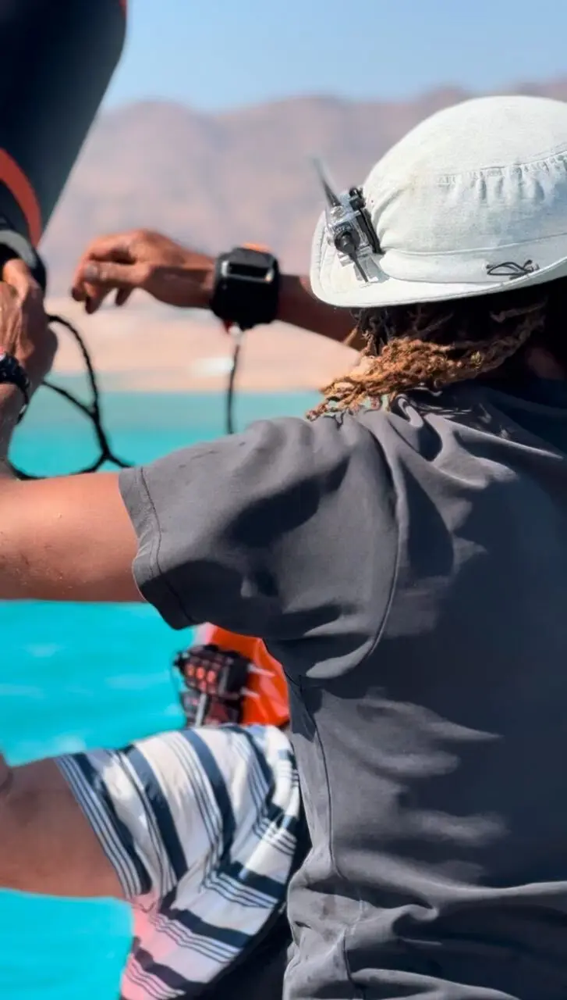
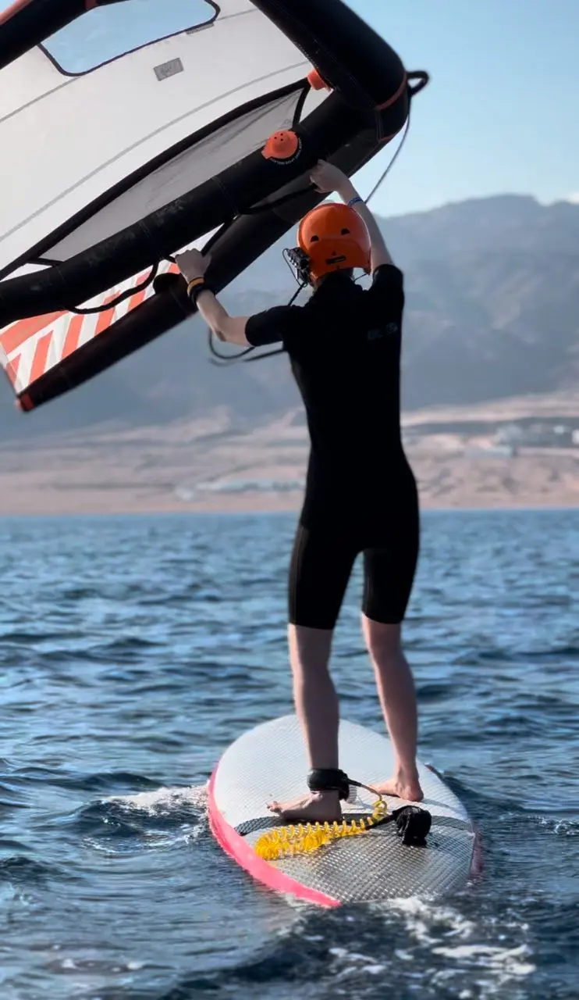
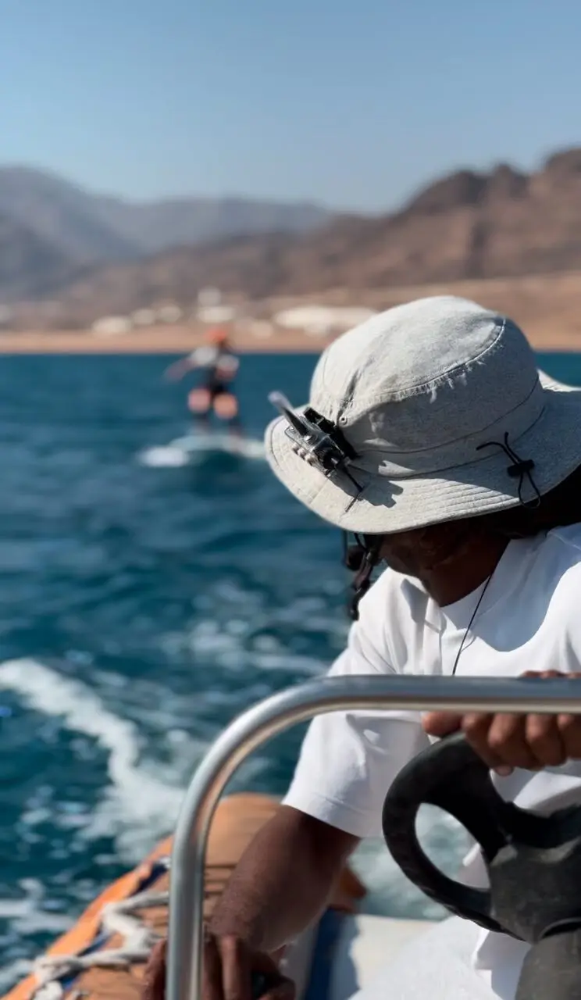

Вингфойл — уникальный водный спорт, отличающийся от других ощущением абсолютного полёта. Высота такого «полёта» в нашем центре не превышает 85 см — размера мачты гидрофойла.
Этот захватывающий процесс начинается с того, что доска поднимается над водой и словно парит над ней. Именно в этот момент, когда доска «отлипает» от поверхности, появляется чувство невесомости и полёта — эмоция, которую сложно описать словами.
Но многие ученики в этот момент испытывают волнение, теряют контроль и совершают ошибки: ученик либо падает в воду, либо доска приводняется и её приходится снова выводить на фойл.
02
Чёткая связь — ключ к успеху
Шум ветра, воды и расстояние между учеником и инструктором часто мешают полноценному общению. С использованием раций BB Talkin’ эта проблема решается. Гарнитура с наушником обеспечивает отличную слышимость даже в самых ветреных условиях.
Это даёт возможность инструкторам в реальном времени корректировать ошибки ученика, объяснять технику и подсказывать нужные действия.
Фокус только на контроле доски и винга. Не нужно поворачиваться и пытаться расслышать инструктора.
03
Подсказки в нужный момент
В основе вингфойла лежат контроль баланса на доске — «дави на нос», «дави назад» — и контроль тяги винга. Научиться удерживать баланс на доске — одна из самых сложных задач для начинающего вингфойлера.
Здесь важна не только теория, но и мгновенная реакция на советы инструктора. Когда инструктор может своевременно дать указания через рацию, ученик лучше понимает, как реагировать на порывы ветра, и контролирует свою стойку. Такая обратная связь минимизирует риск ошибок и позволяет быстрее прогрессировать.
Мгновенные советы — не теряем время и не теряем баланс. Время урока проходит максимально эффективно.
04
Двусторонняя связь как основа эффективного обучения
Рации BB Talkin’ обеспечивают не только одностороннюю передачу инструкций, но и возможность ученику задавать вопросы. Это особенно важно для тех, кто только осваивает вингфойл: когда возникают сомнения или непонимание, можно сразу получить разъяснения.
Инструктор, в свою очередь, не только наблюдает за учеником визуально, но и понимает его эмоциональное состояние. Такой формат коммуникации делает уроки более персонализированными и эффективными.
05
Психологическая поддержка
Вингфойл — это спорт, который требует концентрации, но также может вызывать страх или неуверенность, особенно на первых этапах. Голос инструктора, который поддерживает и успокаивает, помогает расслабиться, а расслабление — один из ключевых факторов успешного обучения.
Если ученик чувствует себя уверенно и спокойно, он быстрее осваивает технику.
06
Итог
Рации BB Talkin’ — это не просто средство связи, а инструмент, который значительно улучшает качество обучения вингфойлу. Они обеспечивают чёткую слышимость, своевременную обратную связь и психологическую поддержку, что делает уроки максимально комфортными и результативными.
Независимо от уровня подготовки, использование такой технологии помогает быстрее освоить технику и получить максимум удовольствия от процесса.
Если вы хотите ощутить истинную свободу и полёт на воде, позаботьтесь о качественной связи с инструктором. BB Talkin’ — ваш надёжный помощник в мире вингфойла.

